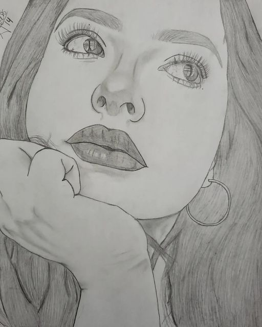

Yerson Alexis Lucas Zambrano
14/02/2001
- Whatsapp: +593979443575
-
Correo: yerson123lukas@gmail.com - Facebook: Yerson Alexis Lucas
Descripcion Personal
Soy Yerson Lucas un estudiante apasionado de 22 años que está inmerso en el fascinante mundo de las Tecnologías de la Información. Me encanta explorar y descubrir los avances tecnológicos en constante evolución que dan forma a nuestra sociedad moderna.
Como estudiante de la carrera de Tecnologías de la Información, estoy comprometido en adquirir conocimientos profundos sobre diversos aspectos del campo. He estado aprendiendo los fundamentos de la programación, enfocándome en lenguajes como HTML, CSS, JavaScript. Además, he ampliado mi comprensión de los sistemas de bases de datos y estoy adquiriendo habilidades en diseño web y desarrollo de aplicaciones.
Universidad

La Universidad Técnica de Manabí, UTM, es una institución pública de educación superior ubicada en la ciudad de Portoviejo, Manabí (Ecuador). Fue fundada el 29 de octubre de 1952 en el gobierno presidencial del Dr. José María Velasco Ibarra. Sus tres funciones sustantivas son: la Investigación Científica, la Academia y la Vinculación con la sociedad; interviene con calidad en todas las esferas y sectores tantos públicos como privados mediante el apoyo de estudiantes, docentes y autoridades. Oferta estudios de pregrado y posgrado en diversas especialidades y modalidades.
Actualmente la institución se encuentra acreditada dentro del Sistema de Educación Superior del Ecuador, por un periodo de cinco años, mediante Resolución del Consejo de Aseguramiento de la Calidad de la Educación Superior (CACES)
Objetivo
Mi objetivo es convertirme en un profesional competente en la industria de la tecnología, capaz de abordar desafíos complejos y contribuir a soluciones innovadoras. Mi curiosidad y deseo de aprender me impulsan a estar al tanto de las últimas tendencias y prácticas en el campo de las Tecnologías de la Información.
Además de mi formación académica, me considero una persona creativa y orientada a los detalles. Disfruto abordando proyectos desafiantes y buscando soluciones ingeniosas. Me encanta trabajar en equipo y compartir ideas con otros estudiantes y profesionales del campo. Creo firmemente en el poder de la colaboración y la comunicación efectiva para lograr resultados exitosos.
Hobbies
Uno de mis hobbies es realizar dibujos a lapiz
Retratos
Por lo general realizo retratos los pueden encontrar en instagram como @areku_14
Anime
Tambien realizo ilustraciones de anime.